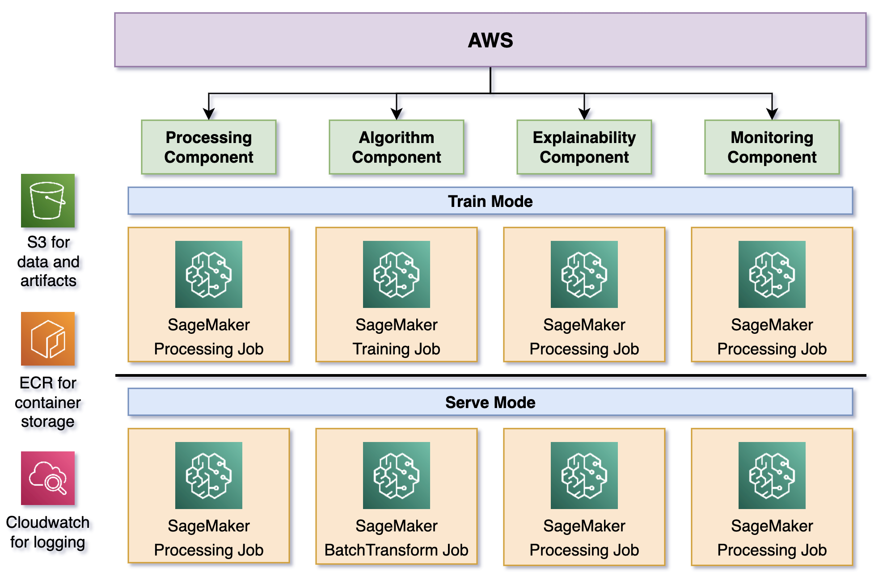
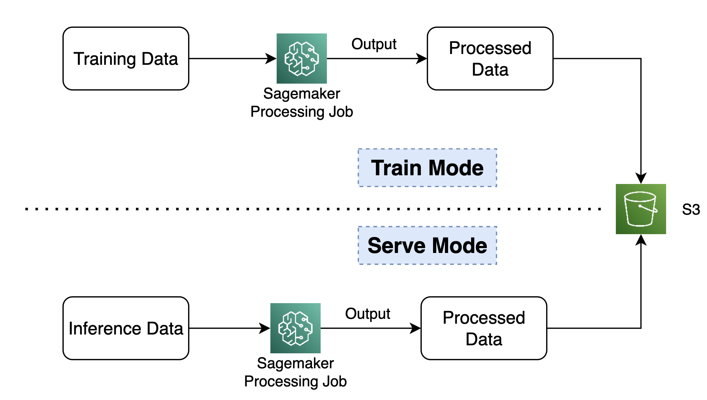
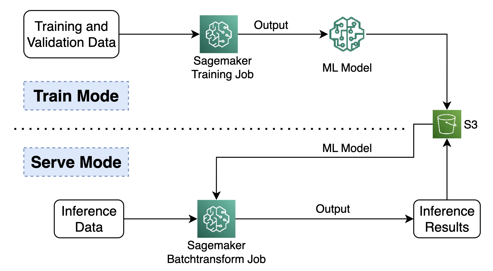
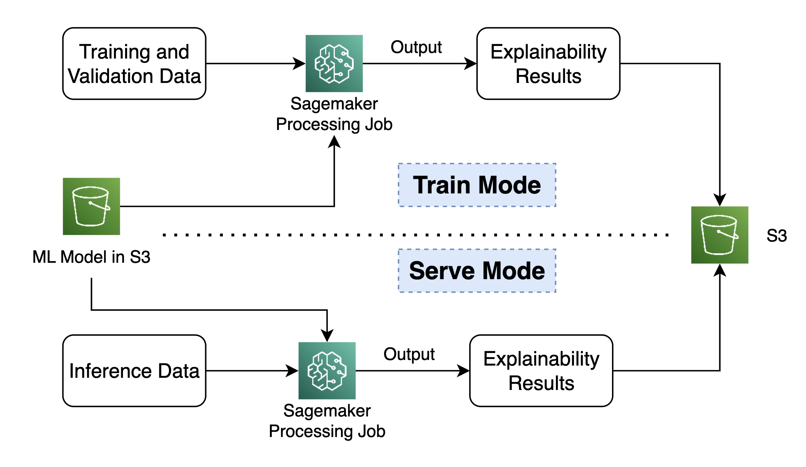
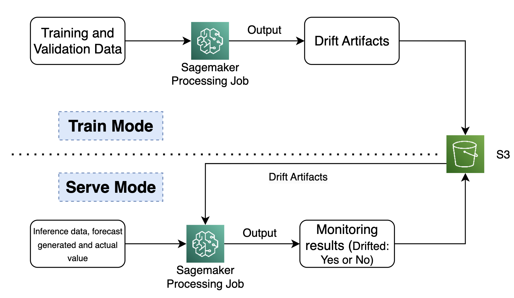

End-to-End MLOps on AWS: Part3.3- Time Series Forecasting: Components Deep Dive #
| Authors: Palash Nimodia , Abhishek Tawar , Steffi Andrade |
| Last Edited: 01/07/2023 |
| Previous Blog Link: E2E MLOps on AWS: Part3.2- Time Series Forecasting: Detailed working of Pipelines |
This blog is the third and last of a series of blogs based on MLOps workflows we built. In this blog, we will talk about the various components used in the timeseries pipeline developed using AWS sagemaker pipeline. Also, for an overview of the time series pipeline workflow refer to our first blog in Time-Series Domain . To understand the working of the pipeline in depth, the various steps and the AWS services involved, refer to our previous blog .
|  |
|---|
| Components of the Sagemaker Pipeline |
From the diagram above we can observe that the end-to-end pipeline solution consists of two major pipelines: Training pipeline and Inference pipeline. Both pipelines consists of four main components they are –
Components in Detail: #
- Processing component
- Algorithm component
- Explainability component
- Monitoring component
Every component supports two run modes namely the train mode and serve mode. All components are executed in the train mode for the training pipeline and in the serve mode for the inference pipeline. In each component we use parameter ‘run_mode’ to specify the run mode. You can find the solution code repository here . Let’s dive into every component to understand its working.
1] Processing Component: #
The processing component handles data-preprocessing in batch mode. This component reads the input CSV file based on the inference date parameter, performs cleaning, preprocessing, scaling steps and saves the preprocessed data in s3. This component will also apply specific filters to extract data for ‘Birmingham’ city. A processing job is created to run this component. The key differences in the run modes are:
|  |
|---|
| Processing Component Lifecycle |
-
Train Mode:
In train mode it splits the data in train and validation splits. It saves the artifacts of the scalar.
-
Serve Mode:
In serve mode, it separates the target column from the input columns as ‘inference_Y.csv’ and ‘inference_X.csv’ respectively. The artifacts (scalers) output path of this component in train mode is passed as an input and used to scale inference_X dataset.
2] Algorithm Component: #
The algorithm component performs two major tasks, which are model training and model inference in batch setting. The key differences in the run modes are:
|  |
|---|
| Algorithm Component Lifecycle |
-
Train Mode:
In train mode this component will perform the task of training the LSTM based model on the training dataset and evaluate the model on the validation dataset. The generated model artifacts are saved in S3. The train and validation data is passed as input to this component. Additionally, total number of epochs, features, early stopping value and look back period are passed as hyperparameters. The training is carried out in batch mode by creating a sagemaker training job.
-
Serve Mode:
In serve mode, it uses the model trained in the train mode to perform batch inference on the inference data. This component consists of two sub-steps in the inference pipeline. The first step is the ‘model step’ where a sagemaker model is created using the model artifact path obtained from the train mode output of this component. This sagemaker model is used in the next step that is the ‘transform step’ where a sagemaker batch transform job is created to perform batch inference on the inference data. Look back and look ahead period are also passed as environment variables. The transform step is carried out after the model step is completed. Generated forecast is saved in s3.
3] Explainability Component: #
The explainability component is tasked with providing interpretability to the model. In order to achieve this task this component computes shap values by comparing the predicted and actual values. It then generates and saves a clarify report. It uses a sagemaker processing job to execute this task. The clarify reports generated are saved in s3. It is defined as a processing step within the training pipeline and it is triggered only after the algorithm component is executed. The key differences in the run modes are:
|  |
|---|
| Explainability Component Lifecycle |
-
Train Mode:
The input in the train mode is the train data.
-
Serve Mode:
In serve mode, the inputs to this component are the test data which is the output of the processing component in serve mode and the train data which is the output of the processing component in train mode.
4] Monitoring Component: #
The monitoring component detects performance issues by detecting drift in the performance of machine learning models or data . It uses a sagemaker processing job to monitor the performance of models. It is defined as a processing step within the training pipeline and it is triggered only after the algorithm component is executed in parallel with the explainability component. The key differences in the run modes are:
|  |
|---|
| Monitoring Component Lifecycle |
-
Train Mode:
In train mode, the monitoring component generates two baselines to detect drift in data and model. It uses the train data to generate the baseline report for data drift and validation data for model drift. It saves the data and model drift baseline reports in s3 as CSV files.
-
Serve Mode:
In the serve mode, this component detects data and model drift. It will compare the detected drift with the baseline drift computed by this component in the train mode. Model drift is detected by comparing the forecast value generated with the actual value corresponding to that date. Since actual values will always lag the forecasted value, the date for which drift is detected is the date that is look ahead days before the inference date (drift_detect_date = inference date - [look_ahead+1] days). The inputs to this component are the inference data, forecast generated and actual value corresponding to the drift_detect_date and the monitoring baseline artifact path which is the output of the monitoring component in train mode. It generates and saves the drift analysis report in s3.
We will post the source code repository link of our project on top of this blog soon. Stay tuned!. If you find our work interesting you can replicate it for your usecase. Feel free to contact us if you have any feedback, suggestions or comments. Happy learning.
References: #
- https://docs.aws.amazon.com/sagemaker/latest/dg/define-pipeline.html
- https://docs.aws.amazon.com/sagemaker/latest/dg/build-and-manage-steps.html
- https://sagemaker-examples.readthedocs.io/en/latest/sagemaker-pipelines/tabular/abalone_build_train_deploy/sagemaker-pipelines-preprocess-train-evaluate-batch-transform.html